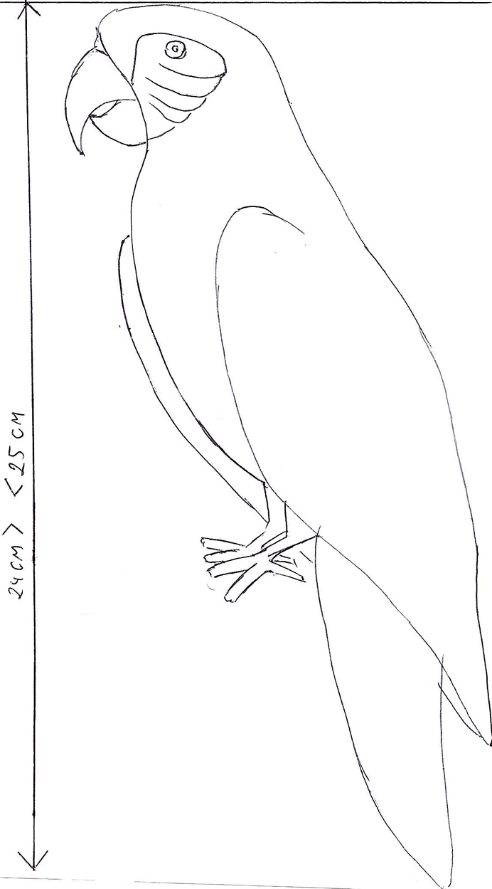
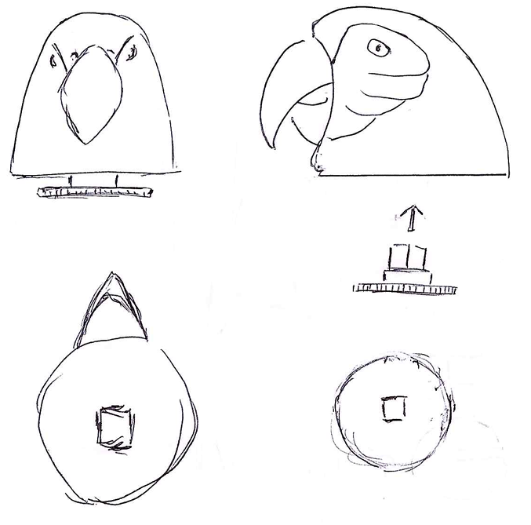
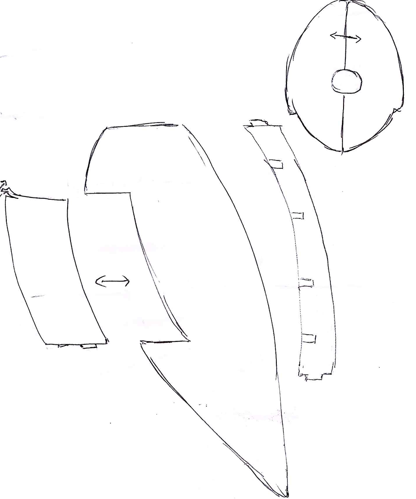

ROBOTIC MODELLING AND DRONE SKIN DESIGN
Animatronic Parrot

Introduction
This project presents the design and fabrication of a 25 cm tall parrot statue prototype, developed as part of the Robotic Modelling and Drone Skin Design module. It serves as a creative and technical exploration of both physical and digital prototyping methods, with an emphasis on aesthetics, structure, and future adaptability into an animatronic system.
The aim was to simulate a professional product development pipeline, combining sketching, digital modelling, and practical fabrication techniques. The parrot was selected not only for its vibrant and expressive form but also for its symbolic association with communication and movement which are traits well-suited for robotic exploration. Although this version is a static decorative model, the design accounts for potential articulation, specifically a neck joint enabling head rotation, in line with the module requirement for at least one moving part.
The development process began with conceptual sketching to visualise the form, posture, and mechanical considerations. These sketches informed the digital modelling phase, where a scanned 3D reference of a parrot was analysed and altered using tools such as Blender and CAD software. The plan for the project was to scale down the model to 24.5 cm and redesign it with unique structural features, including a hollowed torso, a compartment access panel, and modular segmentation for 3D printing.
PLA was chosen for the prototype due to its affordability, ease of printing, and minimal waste production, aligning with the project’s sustainability goals and £200 budget constraint. Surface finishing techniques such as sanding, priming, and painting were planned to meet the requirement for a context-appropriate aesthetic covering, suitable for public display in pubs, shops, or theme parks.
The project displays the integration of creative design with practical prototyping, offering a foundation for future animatronic development. It reflects an iterative process where artistic vision and technical constraints informed one another, in hope to achieve a functional, detailed prototype ready for display or further enhancement.

Concept Design
Initial brainstorming generated three possible directions for this project: a dinosaur, a parrot, and an owl. After a group discussion, the parrot was chosen as the final concept due to its visual appeal, expressive features, and symbolic association with communication and mimicry which are traits well suited for future animatronic development.

The concept of parrot animatronic and its individual parts were drawn with pencil and pen on paper to support and justify further development.

Each team member was tasked with sourcing either a physical sculpture or a pre-scanned 3D model. One team member located an STL file of a parrot with spread wings and a pirate hat online. This significantly reduced the project’s logistical demands, eliminating the need for 3D scanning sessions, associated booking and equipment costs, and time-consuming physical sample acquisition. However, using a third-party model introduced concerns regarding originality, copyright, and project ownership integrity.
To resolve these issues and ensure a unique outcome, the team decided to:
Remove the pirate hat. Redesign the wings into a folded state, creating a distinct and original silhouette. Scale the model to just under 25 cm in Blender to meet the project constraints. Blender was also planned to be used for Detailed Development as this software excel in surface detailed finishing and preproduction processing.
Unfortunately, no significant feedback or additional modelling was contributed by the rest of the group, and further sculpting was unsuccessful. Nonetheless, this exemplified one of the real-world challenges in collaborative development with division of labour with individual initiative.
Originally, a feathered top layer was considered for realism, referencing commercial animatronics such as the Life Sized Animatronic Macaw Replica — ANIMAL MAKERS. However, given the product’s indoor-only context, expected user maintenance, and long-term durability, the design was revised in favour of a hard-shell exoskeleton similar to Animatronic Vultures | Animatronic Types & Technology. This decision not only simplifies cleaning and increases structural integrity but also improves manufacturability for potential future batches. Hard shell exoskeleton also justify the use of Haptic modelling workshop which excel in significant changes to the model in form of virtual clay sculpting. The use of Haptic pen proved to be challenging as this require extensive practise to achieve desired outcome.
In professional pipelines, motion capture studios might be used to create lifelike movements based on live animals. However, this step was excluded from the project because:
The prototype implements only a simple rotational neck joint, and capturing a live parrot for motion data was not feasible.
For development of the moving part and its mechanism, Fusion 360 was planned to be used. Fusion 360 excels in creation of mechanism and internal structure from scratch. Development of the specialized gear with squared hollowed shaft which would serve as tight fit connection with head is ideal task for this software.

Prototyping and Material Justification
With the digital model prepared, the project was supposed to transition to the physical prototyping stage. The aim was to produce a structurally sound, low waste, and visually presentable prototype suitable for displaying in indoor public environments such as theme parks, pubs, or retail displays. A key constraint was the budget cap of £200, which informed decisions across materials, fabrication methods, and post-processing.
Choice of Fabrication Technology
Given the need for a low-cost and waste-minimising solution, Fused Deposition Modelling (FDM) 3D printing was selected as the primary fabrication method. While 3D printing is not typically suitable for mass production due to time and surface quality limitations, it is highly effective for early-stage prototypes where iterative refinement, material efficiency, and one-off production are essential. Additionally, the reduced need for support materials and the modularity of printing individual parts aligned well with the project's environmental goal of minimising production waste. This decision was also guided by similar project found on YouTube Prototyping Animatronic Parrot Parts with Longer LK4X 3D Printer - YouTube.
Resin using a mould was considered and abandoned as this is harmful substance and in case of error resulting from air bubbles or misalignment led to unusable parts.
The parrot was supposed to be divided into logical components for ease of printing and assembly:
The head would be printed separately, both to support the proposed rotational neck joint and to ensure a strong, uninterrupted form. 3D printed hollowed head with squared connection designed for tight fit with gear is challenging task to achieve with resin as this require accuracy of 0.127mm clearance gap.
The torso was to be split vertically and hollowed out to simplify printing and reduce material usage as well as weight. This would however require postproduction assembling.
A compartment cover, modelled after a standard remote control battery hatch which includes compliant mechanism V shaped lock system, would allow future integration of electronics or mechanical systems.
Laser cutting was identified as a supplementary technology, especially useful for creating internal structural supports or flat reinforcements. Compared to subtractive processes, laser cutting also presents low material waste and precision, making it ideal for lightweight bracketry or skeleton parts. Similar approach was implemented in project captured in YouTube Making Animatronic Parrot Parts with the OMTech Polar Laser - YouTube where laser cutting station was used for internal structure and mechanism for articulation.
Material Selection: PLA for Prototyping
Polylactic Acid (PLA) was chosen as the primary 3D printing material due to its wide availability, ease of use, and suitability for visual prototypes. PLA offers: High print resolution, which helps capture fine design details. Biodegradability under industrial composting conditions, supporting the project’s sustainability goals. Low warping and dimensional accuracy, ideal for large yet lightweight parts.
However, PLA is not without limitations: Minimal impact resistance makes it unsuitable for high-stress applications. Poor temperature resistance, with deformation possible at temperatures above 60°C.
To mitigate these issues in indoor environments, the team considered applying protective coatings such as: High-temperature enamel paint to reflect heat and improve resistance. Polyurethane clear coats to enhance surface durability and gloss finish, aligning the aesthetic with commercial indoor products.
Planning for Mass Production
Although 3D printing is ideal for prototyping, it is not cost-effective or efficient for large-scale production. If the prototype were to evolve into a commercial product, moulding and casting or injection moulding would be more suitable. These methods offer: Faster production times for repeated units. Improved strength and finish through the use of ABS or composite materials. Lower unit cost after initial tooling investment.
Moulding and casting in particular would allow the reuse of the initial 3D printed prototype as a primary pattern, reducing duplication of effort in the development cycle. Additionally, thermoplastic elastomers (TPE/TPU) could be considered in future iterations for movable or flexible parts such as beaks or wings.
This prototyping phase helped balance cost, feasibility, and quality, laying a solid foundation for potential future animatronic versions of the parrot that may incorporate electromechanical systems.

Reflection
This project provided a hands-on opportunity to apply both creative design and engineering thinking in a single artefact. From concept sketching to 3D printing, the experience emphasized how different design disciplines must work together to bring an idea into a tangible prototype.
One of the most valuable insights was the importance of balancing artistic vision with practical fabrication constraints. Initially, the idea of a feathered finish was visually compelling and closely aligned with how many animatronic birds are presented in media or entertainment. However, after considering maintenance, durability, and ease of post-production, the team pivoted to a hard-shell design, which could simplified manufacturing and allowed more reliable structural planning. This decision showed how flexibility and responsiveness to context are essential in real-world design work.
Another key takeaway involved file acquisition and IP awareness. While using an STL file from the internet saved time and resources, it required significant adaptation to avoid originality or copyright concerns. This reinforced the importance of ethical design practice, particularly when sourcing digital assets.
From a technical perspective, the limitations of PLA as a material encouraged deeper consideration of material science and surface finishing. Applying coatings to improve heat and impact resistance was a new area of learning, and it also showed how postproduction could enhance a prototype’s durability and realism.
Teamwork dynamics were also a revelation. Although the project began collaboratively, involvement decreased over time, which led to independent problem solving and time management challenges. This assessed not only technical skills but also project planning and self reliance, reinforcing the importance of clear communication and role delegation in team-based design tasks.
Finally, the decision to include a simple mechanical joint (for neck rotation) helped fulfil technical requirements without overcomplicating the prototype. However, the experience sparked curiosity around future enhancements, such as animatronic movement, sound integration, and sensor-driven interaction. It was clear that even a basic prototype can offer a solid foundation for future development and refinement, especially when produced with modularity and internal space in mind.
Conclusion
This project although unsuccessful, demonstrates the entire pipeline of conceptualizing, designing, and prototyping a robotic parrot statue intended for indoor decorative use. It integrates artistic ideation, digital modelling, material research, and practical fabrication within a limited budget and time frame. The planed use of 3D printing and PLA material complied with the aim to meet sustainability and prototyping goals, while also preparing the design for potential mass production via moulding or injection techniques.
Key learning outcomes included: The interplay between design creativity and manufacturing constraints. The impact of material selection and post processing on functionality and aesthetics. The importance of ethical asset sourcing and team coordination.
By focusing on a parrot with a simple neck joint, the artefact met module requirements while leaving room for future iterations involving more complex articulation and electronics. This portfolio stands as both an academic deliverable and a showcase of practical design ability, positioning the project as a valuable addition to a professional portfolio in creative robotics, prototyping, or product design.
References
Animatronic Vultures | Animatronic Types & Technology (no date). Available at: https://www.sallydarkrides.com/animatronic/vultures (Accessed: 14 May 2025).
Life Sized Animatronic Macaw Replica — ANIMAL MAKERS (no date). Available at: https://www.animalmakers.com/animalprops2/props/p/life-sized-animatronic-macaw-replica (Accessed: 14 May 2025).
Making Animatronic Parrot Parts with the OMTech Polar Laser - YouTube (no date). Available at: https://www.youtube.com/watch?v=6vXYINovHPo (Accessed: 15 May 2025).
Prototyping Animatronic Parrot Parts with Longer LK4X 3D Printer - YouTube (no date). Available at: https://www.youtube.com/watch?v=GJOCTnEV2Qk (Accessed: 15 May 2025).